C'est quoi
L'ingénieur est un programme sur ton PC. Il lit les données du jeu et te parle dans ton casque : il t'avertit des voitures plus rapides, te dit quand rentrer au stand, ce qu'on change à l'arrêt et où tu perds du temps. Il répond à tes questions à la voix – maintiens le bouton du volant, parle, relâche.
Le Pit Wall est une page web (PC ou téléphone). Toute l'équipe voit en direct l'état de la voiture, les rivaux, la météo et le planning des relais, et peut envoyer au pilote des messages que l'ingénieur lit à voix haute.
Fonctionne sur tous les circuits, avec toutes les voitures et catégories de Le Mans Ultimate et d'Assetto Corsa. Tu peux rouler seul (mode Solo) ou en équipe.
Ce qu'il te faut
- Windows 10 ou 11 et Le Mans Ultimate ou Assetto Corsa (Steam ; pour Assetto Corsa, Custom Shaders Patch recommandé – section Assetto Corsa).
- Un casque avec micro et un bouton libre sur le volant (ou une touche du clavier).
- Internet (la voix, la reconnaissance vocale et le Pit Wall fonctionnent en ligne).
- Une clé Groq gratuite – sans elle, l'IA ne fonctionne pas (meilleure reconnaissance vocale, réponses de l'IA, traduction des messages moins courants) ; comment l'obtenir : IA.
Installation (2 minutes)
- Télécharge l'installateur
PitWallCrew_Setup_….exedepuis le post FR Mods sur Patreon (post public – démo gratuite ; tu débloques la version complète dans l'appli avec Se connecter avec Patreon – elle se télécharge toute seule, tes réglages restent). - Lance le fichier téléchargé. L'installateur n'a pas encore de signature numérique, donc Windows peut afficher « Windows a protégé votre ordinateur » – clique sur Informations complémentaires → Exécuter quand même.
- Dans l'installateur, choisis ta langue (le programme utilisera la même ; l'espagnol, l'italien et le danois se choisissent ensuite dans l'app : Son et langue → Język / Language), puis OK, Suivant et Installer. L'installation dure environ une minute, ne télécharge rien (Python est inclus) et ne demande pas de droits d'administrateur.
Le programme et tes données vont dans
Documents\Pit Wall Crew. Tu peux décocher les raccourcis Pit Wall Crew sur le bureau et dans le menu Démarrer. À la fin, choisis de lancer ou non l'appli, le tutoriel vocal et la page de la version complète sur Patreon, puis clique sur Terminer. - L'appli s'ouvre dans la langue choisie, avec la fenêtre Premiers pas à côté – suis-la dans l'ordre (chaque point a un bouton Ouvrir) :
- Équipe : en haut Créer une nouvelle équipe… (première personne) ou code et mot de passe de l'équipe donnés par tes coéquipiers ; puis ton nom – un nouveau nom est ajouté aux pilotes de l'équipe à l'enregistrement ; seul – mode Solo.
- Micro et bouton : choisis ton micro (la barre bouge quand tu parles), clique sur Définir : appuie sur le bouton… et appuie sur le bouton du volant.
- Son et langue : choisis la voix de l'ingénieur et clique sur ▶ Écouter.
- Clé Groq (gratuite, pour l'IA) : comment l'obtenir → Avancé → Ta propre clé Groq → Vérifier la clé.
- Patreon : sur la page Ingénieur, Se connecter avec Patreon – c'est ainsi que tu reçois les mises à jour.
- Clique sur Enregistrer et redémarrer le module ingénieur.
- Dans LMU, une fois : Settings → Gameplay → Enable Plugins = ON (sans cela le programme ne voit pas les données du jeu ; Assetto Corsa : section Assetto Corsa). Va en piste, maintiens le bouton et demande par ex. « combien de carburant ? ».
Ancienne installation depuis le zip (INSTALL.bat) ? Lance le nouvel installateur. Si le programme avait été décompressé dans Documents\Pit Wall Crew, tes réglages restent automatiquement.
S'il était dans un autre dossier, copie config.toml et le dossier data de l'ancien dossier du programme vers Documents\Pit Wall Crew\Program (ou refais simplement « Premiers pas »).
Une ancienne installation avec un autre Python que 3.12 affiche après une mise à jour un message demandant de l'installer avec le nouvel installateur.
Tutoriel vocal (1–2 minutes) : au premier lancement, l'ingénieur te guide en 5 étapes – test radio, « combien de carburant il me reste ? », « qui est derrière moi ? », deux appuis courts, « silence ». Tu vois tout de suite si le micro et le bouton fonctionnent. Il ne démarre qu'une fois un bouton de parole attribué (ou déjà pressé une fois) et quand le micro donne un signal ; jamais pendant une course. Passer : « passe le tutoriel » (ou décoche-le à la fin de l'installation) ; à nouveau : Aide → Mode d'emploi → Tutoriel vocal.
Désinstaller : Paramètres Windows → Applications → Pit Wall Crew → Désinstaller (ou menu Démarrer → Désinstaller Pit Wall Crew). Cela supprime le programme ; tes réglages et enregistrements (config.toml, les dossiers data et recordings dans Documents\Pit Wall Crew\Program) restent – pour tout supprimer, supprime ensuite le dossier Documents\Pit Wall Crew.
La fenêtre de l'appli
L'icône Pit Wall Crew ouvre l'appli. L'ingénieur démarre tout seul et commence à parler dès que tu lances le jeu et que tu vas en piste. Le thème ☾ Sombre / ☀ Clair se change en bas de la barre de gauche (tout de suite, sans redémarrage). Temps au tour et secteurs en couleur comme sur le Pit Wall : violet – meilleur de la catégorie, vert – ton record, jaune – plus lent.
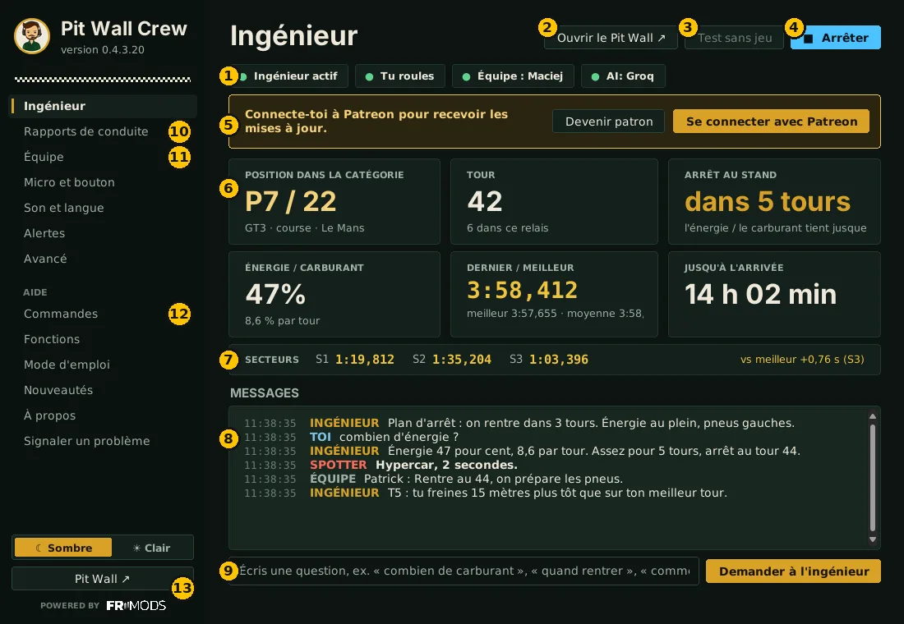
- État : l'ingénieur tourne-t-il, voit-il le jeu (« Tu roules » ou spectateur quand un coéquipier conduit), connexion équipe et IA. Vert = OK.
- Ouvrir le Pit Wall – la page de l'équipe dans le navigateur, déjà connectée à l'équipe de l'appli (sans saisir de mot de passe).
- Test sans jeu – une course simulée. Vérifie la voix, le micro et le Pit Wall sans lancer LMU.
- Démarrer / Arrêter l'ingénieur.
- Patreon – connecte-toi pour recevoir les mises à jour. Ensuite il ne reste que « Se déconnecter de Patreon ».
- Chiffres clés : position, tour, tours avant l'arrêt, énergie ou carburant, chronos, temps jusqu'à l'arrivée.
- Secteurs : les temps S1–S3 du dernier tour et l’écart avec ton meilleur tour (entre parenthèses, le secteur où tu perds le plus).
- Messages – tout ce qu'a dit l'ingénieur, tes questions et les messages de l'équipe. Rouge = urgent.
- Champ de question – écris une question au lieu de parler.
- Rapports de conduite : les rapports après chaque relais et chaque course, ainsi que le relais en cours en direct (description plus bas, dans « Résumé du relais »).
- Réglages – équipe, micro, voix, alertes (voir plus bas).
- Aide – commandes, fonctions, mode d'emploi (aussi Premiers pas), changements, à propos et Signaler un problème.
- ☾ Sombre / ☀ Clair : thème de la fenêtre. Pit Wall – comme le bouton 2, depuis chaque page de l'appli.
Rapports de conduite
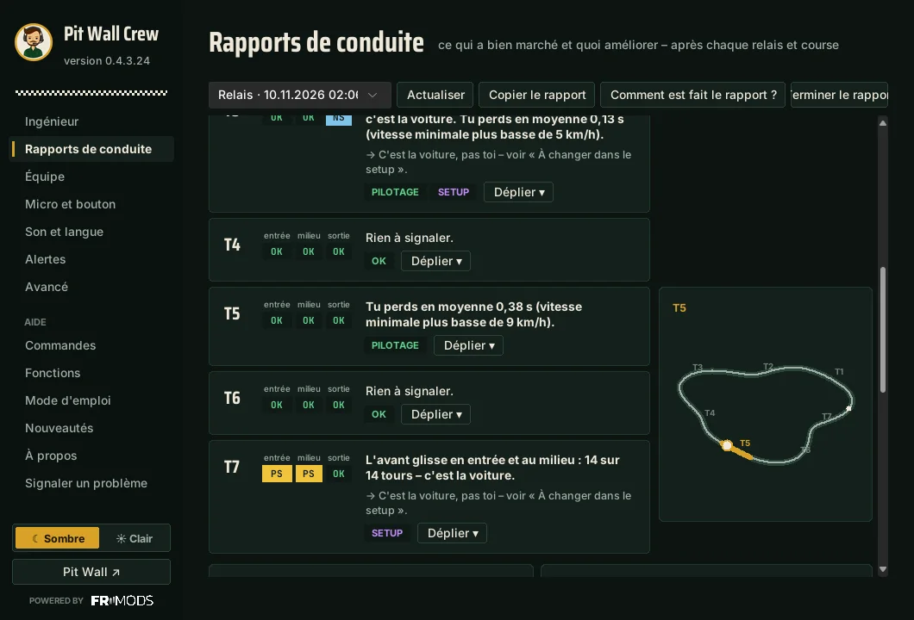
Réglages
Après chaque changement, clique sur Enregistrer et redémarrer le module ingénieur (en bas à droite).
Équipe
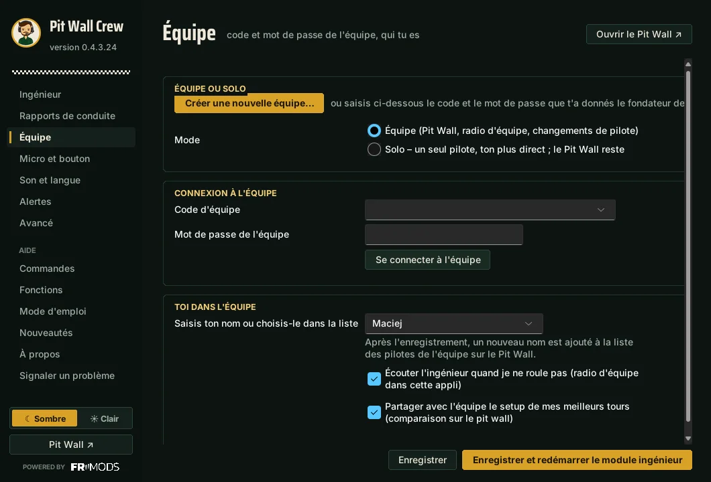
- Solo – tu roules seul : rien d'autre à saisir. Le Pit Wall fonctionne quand même comme ta vue en direct.
- Équipe – une personne clique sur Créer une nouvelle équipe… (nom et mot de passe) et reçoit un code d'équipe de 6 caractères. Les autres saisissent ce code et le mot de passe, cliquent sur Se connecter à l'équipe et choisissent qui ils sont.
- Le champ Code d'équipe liste les équipes auxquelles cet ordinateur s'est connecté (codes et noms seulement, sans mots de passe). Choisis-en une, saisis le mot de passe de cette équipe et enregistre. Le Pit Wall dans le navigateur mémorise aussi les codes : à la connexion et dans l'onglet Équipe (« Autres équipes sur cet appareil »).
- Partage le code et le mot de passe uniquement en privé – qui les connaît voit l'état de la voiture et peut écrire au pilote.
- Écouter l'ingénieur quand je ne roule pas – quand un coéquipier conduit, tu entends son ingénieur (radio d'équipe).
- Partager avec l'équipe le setup de mes meilleurs tours – le setup du jeu part dans la base de l'équipe avec ton meilleur tour ; le pit wall montre les différences de setup sur la carte comparative. Décoche-la si tu ne veux pas le partager.
- Tours sur cet ordinateur (Avancé) – le programme enregistre chaque tour sur le disque et ne supprime rien tout seul ; bouton Supprimer les tours de plus de 180 jours. Le pit wall récupère ici les tours de plus de 14 jours quand quelqu'un les choisit. Les tours roulés sans internet sont envoyés dès que la connexion revient.
Micro et bouton
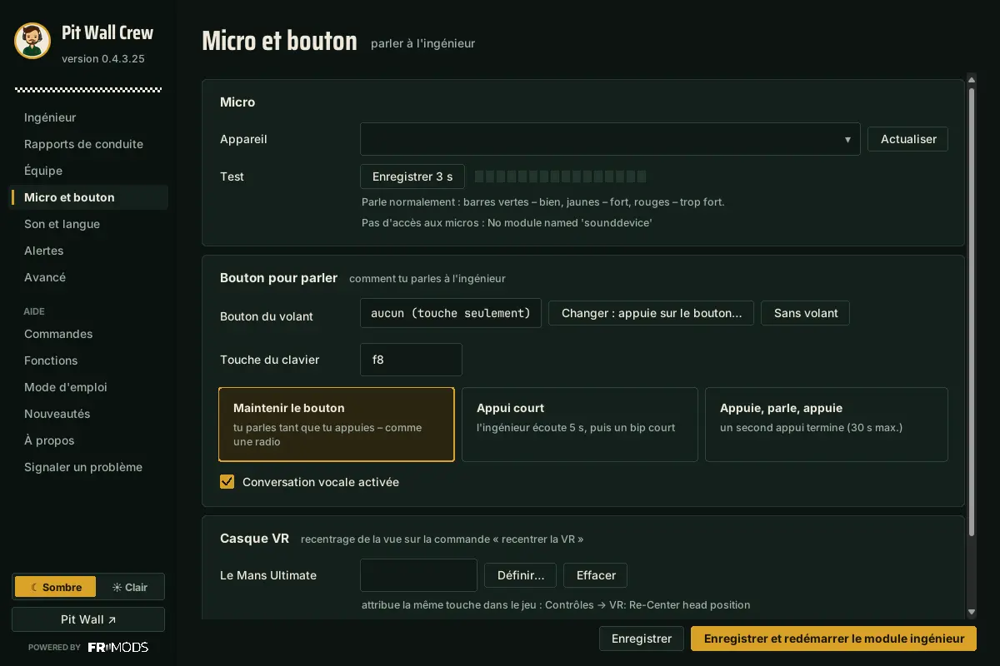
- Choisis le micro et clique sur Test 3 s – dis quelque chose et vérifie que le niveau bouge.
- Définir : appuie sur le bouton… puis appuie sur le bouton du volant qui servira à parler (tous les boutons marchent, y compris ceux des MOZA numérotés au-delà de 32). Une touche du clavier marche aussi. Si le bouton ne marche pas en jeu, redéfinis-le.
- Touche de recentrage VR – à la commande « recentrer la VR », l'appli appuie sur cette touche (Définir : appuie sur une touche…). Attribue la même touche dans le jeu (LMU : Commandes → « VR: Re-Center head position »). Une touche séparée pour Assetto Corsa – Ctrl+Espace par défaut ; l'appli appuie sur la touche du jeu auquel tu roules.
Son et langue
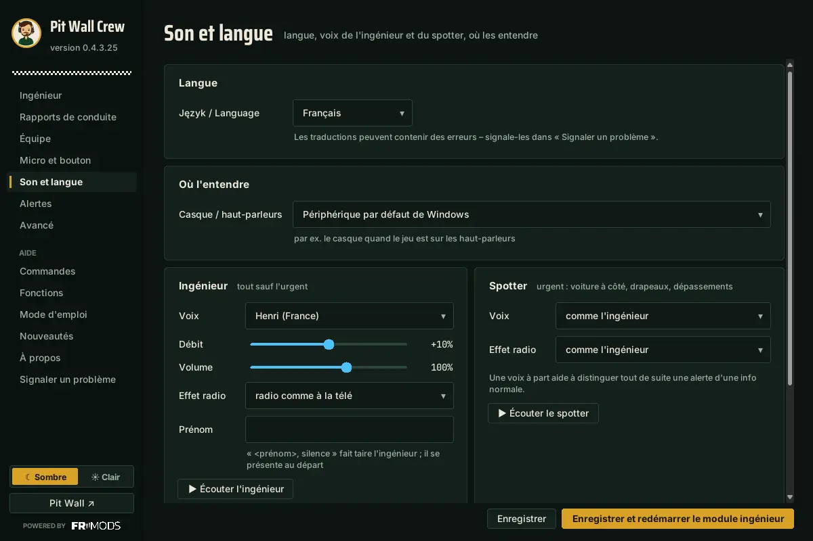
- Język / Language – tout en haut, toujours aussi en anglais, pour la trouver facilement.
- Casque / haut-parleurs – l'appareil sur lequel tu entends l'ingénieur et le spotter, p. ex. un casque pendant que le jeu est sur les haut-parleurs.
- Voix de l'ingénieur, débit, volume, effet radio et prénom de l'ingénieur. ▶ Écouter joue un exemple.
- Si tu lui donnes un prénom (par ex. Marc), il se présente et « Marc, silence » le fait taire.
- Voix du spotter – une voix à part pour les messages urgents sur la piste (voiture à côté, drapeaux, incidents, prises de tour) ; « comme l'ingénieur » = une seule voix. Effet radio du spotter – séparé de l'ingénieur (par ex. spotter sans grésillement, ingénieur à la radio). ▶ Écouter le spotter joue un exemple.
- Unités – km/h ou mph, m ou ft, °C ou °F, l ou gallons, pression comme dans le jeu / bar / psi / kPa : c'est ainsi que parle l'ingénieur, que sont écrits les rapports et ce que le pit wall affiche d'abord (chacun peut choisir les siennes dans ⚙). Les degrés de carrossage ne changent pas.
Alertes
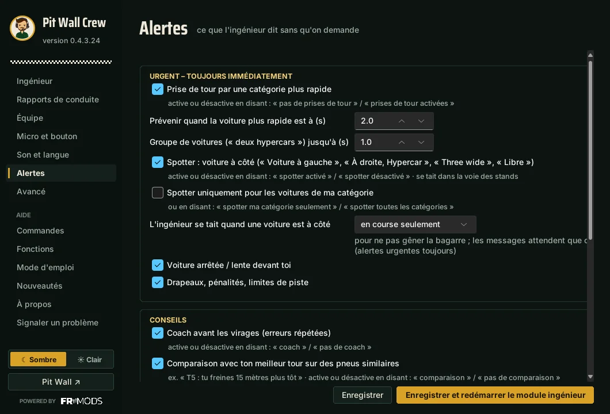
Ce que l'ingénieur dit de lui-même : prises de tour par les catégories plus rapides (et à partir de combien de secondes), voitures arrêtées, drapeaux, coaching avant les virages, comparaison avec ton meilleur tour, commentaires après les dépassements, conseils de réglages, conseils d'économie de carburant. À la voix : « pas d'économie de carburant », « parle moins », « aucun conseil » ; l'ingénieur répond aussi à « comment désactiver… ? ». Le coach, les comparaisons et les conseils démarrent quand tes temps sont réguliers (3 tours propres aux temps proches) – pas pendant l’apprentissage de la piste. En course, les numéros de virage autres que T1 peuvent différer du vrai circuit, l’ingénieur dit donc « prochain virage : … ». En course, conseils avant virage au plus tous les 3 tours. Les virages sont détectés à partir de la forme de la piste (courbes rapides comprises) et, sur les circuits avec table (Bahreïn), numérotés comme le vrai circuit. Exception : Conseils de réglage aussi pendant l'apprentissage du circuit (ou à la voix « réglages tout de suite ») – quand le réglage est si mauvais que des tours réguliers sont difficiles. Pause entre les conseils – au moins ce nombre de minutes entre deux conseils. Tout s'active et se désactive à la voix en roulant (par ex. « pas de coach »). Pneus encore trop froids après plusieurs tours avec un carrossage presque au minimum – l'ingénieur conseille plus de carrossage (LMU, AC avec CSP). En sortant du garage (essais, qualifs), l'ingénieur vérifie le réglage : carrossage presque au minimum, pressions ou hauteur presque au maximum – une fois par réglage. Combien l'ingénieur parle après un tour – Beaucoup (tout d'un coup), Normal (une remarque par tour – par défaut) ou Peu (une remarque tous les 3 tours). Conseils de réglage avec une deuxième option (« x ou y ») – désactivé : un seul changement à la fois. Conseils de réglages aussi en course – désactivé : en course seulement des conseils de pilotage (réglages en essais et qualifications). Alertes, stratégie et réponses – toujours tout de suite.
Avancé
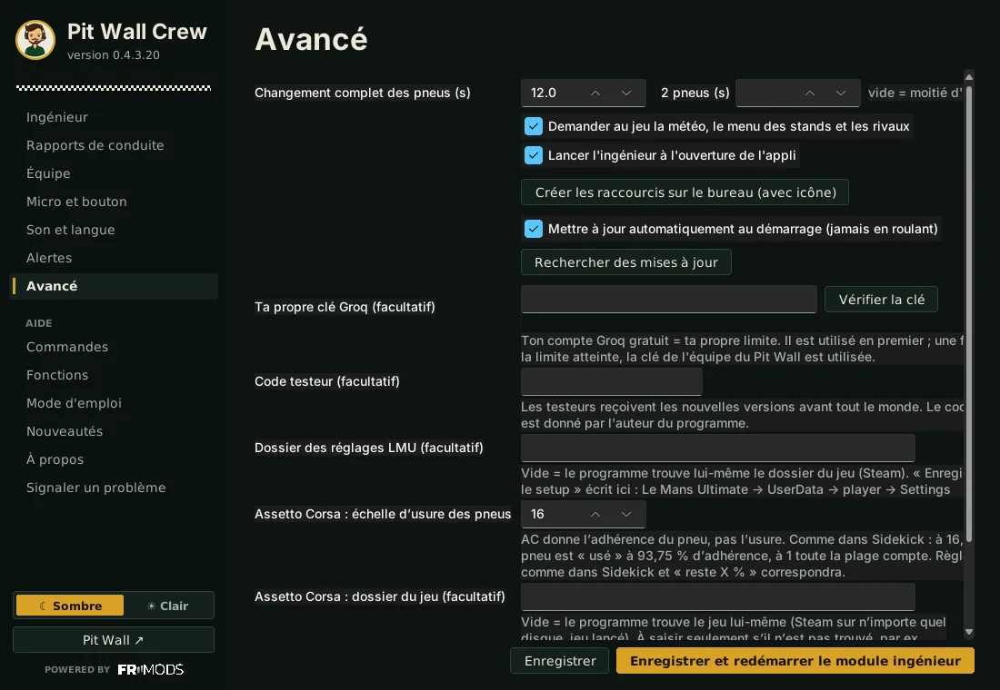
Temps d'un changement complet de pneus, démarrage automatique de l'ingénieur, raccourcis sur le bureau, mises à jour et ta propre clé Groq (facultative – ta propre limite), code testeur et « Demander au jeu la météo, le menu des stands et les rivaux ». Dossier des réglages LMU – en général vide (le programme trouve lui-même le dossier du jeu) ; « enregistre le setup » y écrit le nouveau réglage.
Parler à l'ingénieur
Maintiens le bouton, parle, relâche. Un appui interrompt aussi ce que dit l'ingénieur. Ou sans maintenir : dans Micro et bouton → « Parler à l'ingénieur » choisis « Appui court » et le nombre de secondes d'écoute (au moins 2) ; un nouvel appui arrête l'écoute, et un court bip en marque la fin ; ou « Appuie, parle, appuie » – écoute jusqu'au prochain appui (30 s maximum).
Exemples : « combien de carburant ? », « quand je rentre ? », « quels pneus on change ? », « qui est devant ? », « écart avec le leader ? », « qui est premier ? », « qui est le plus rapide ? », « qui est P5 ? », « conseils pour le départ ? », « que puis-je améliorer ? », « qui est juste derrière moi ? » (voiture la plus proche en piste, toute catégorie), « des accidents ? », « où je perds ? », « dans quel secteur je perds le plus ? », « qui est en piste ? », « météo ? », « quand l'hypercar va me prendre un tour ? », « silence » (silence total jusqu'au prochain appui), « urgent seulement », « répète ».
La liste complète est dans l'appli : Aide → Commandes.
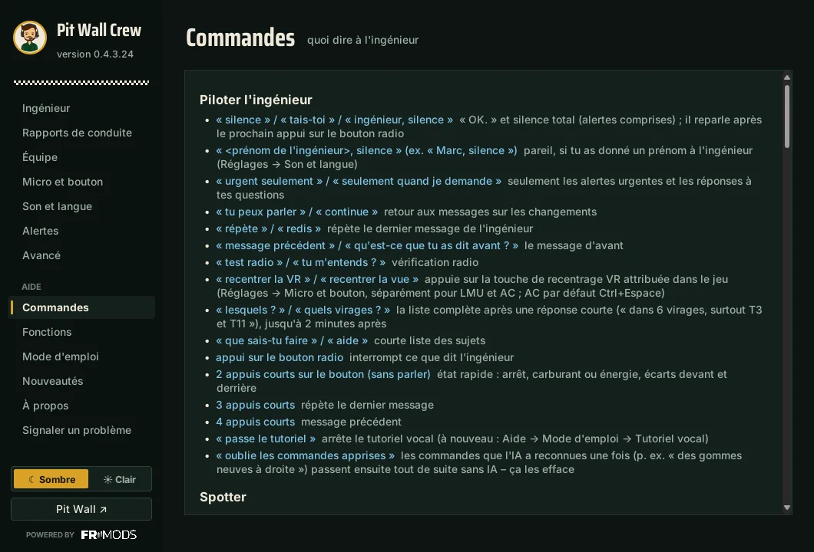
Une question que le programme ne connaît pas part à l'IA (avec une clé Groq) avec les données de course. Les questions sur le programme lui-même (« comment couper les annonces des prototypes qui arrivent ? », « que le spotter n'annonce plus les côtés ») reçoivent une réponse de l'IA d'après ce mode d'emploi et les réglages : la commande ou l'endroit dans les réglages, et si cette option n'existe pas, elle le dit et propose la plus proche. Une commande dite avec tes propres mots (« des gommes neuves à droite », « envoie un texto à Patrick pour qu'il se lève ») est reconnue par l'IA dans la liste de toutes les commandes (aussi dans la démo) et l'appli l'exécute ; la fois suivante, la même phrase marche tout de suite sans IA (« oublie les commandes apprises » les efface). Les mots mal reconnus sont corrigés par l'appli elle-même, sans Internet, et les noms de tes coéquipiers et des rivaux proches sont donnés en indice à la reconnaissance vocale.
- Spotter (Réglages → Alertes) : « Voiture à gauche », « À droite, Hypercar », « Three wide » et de quel côté sont les voitures, « Libre » – toujours à la fin, quand plus personne n’est à côté ; « ma catégorie seulement » possible ; se tait dans la voie des stands, en qualifications (privées dans LMU) et en course avant le départ. Sur la grille, l’ingénieur prévient quand le volant est tourné de plus de 90°. À la voix : « spotter désactivé » / « spotter activé ». Quand une voiture roule à côté, l'ingénieur se tait (même spotter désactivé) pour te laisser te concentrer sur la bagarre – réglage Alertes → L'ingénieur se tait quand une voiture est à côté : en course seulement (par défaut), toujours ou jamais.
- Choc : quelques secondes après l'accident, l'ingénieur dit « Je vérifie si ça te fait perdre du temps » ; après deux tours propres, il donne la perte par tour, si la vitesse de pointe a baissé et si la réparation vaut le coup. S'il ne connaît pas le temps de réparation, il dit jusqu'à combien de secondes elle vaut le coup (ex. « Une réparation jusqu'à 45 secondes vaut le coup, interromps-la si elle est plus longue ») – on peut interrompre la réparation dans le jeu.
- Comment parle l'ingénieur : de lui-même, il parle en phrases complètes, chaque fois avec des mots un peu différents (même contenu, sans répéter sans cesse la même phrase). Plusieurs messages à la fois sont réunis en un seul, et ceux qui ne sont plus à jour (p. ex. un écart avec un rival d'il y a un instant) sont abandonnés. De temps en temps, il réagit à ce qui se passe : ton meilleur tour, le retour dans le rythme après une erreur, une conduite régulière, un rival devant toi à portée d'attaque. Les réponses aux questions sont courtes et vont droit au but.
- Appuis courts sur le bouton sans parler : 1 – coupe, 2 – état rapide (arrêt, carburant ou énergie, écarts), 3 – répète, 4 – message précédent. À la voix : « répète », « message précédent ».
- Pressé : ajoute un juron à ta question (p. ex. « putain, combien de carburant ? ») et l’ingénieur répond nettement plus vite.
- Menu des stands à la voix : « à l'arrêt énergie 60 pour cent et pneus droits », « règle l'arrêt selon la stratégie ». Aussi « change les pneus gauches », « pneus neufs », « pneus tendres / mediums / durs », « mets 30 litres », « mets 40 pour cent », « pas d'essence », « carburant jusqu'à l'arrivée » ; si la voix est mal reconnue, l'IA retrouve la commande. Un équipier peut le faire depuis le Pit Wall : « Demander à l'ingénieur ».
- Reste du menu des stands : « pression avant 2 de moins », « avant gauche 140 », « pressions selon les mesures », « répare les dégâts » (ou « répare seulement la carrosserie », « répare tout »), « change les freins », « aileron 1 de plus », « ferme les écopes de frein avant », « calandre à 3 », « pneus pluie à l'arrêt », « changement de pilote pour Kamil ».
- Proposition d'arrêt : 2 tours avant l'arrêt (et sous la pluie) l'ingénieur demande « Je peux régler l'arrêt : … Ça te va ? » – « oui » règle le menu des stands.
- Résumé du relais : après un arrêt, un changement de pilote ou le retour au garage (relais de 3 tours et plus), le résumé complet est sur la page Rapports de conduite du programme (fichier
recordings\stint_….txt, copie sur le Pit Wall) : rythme, erreurs (sorties, chocs, blocages répétés, patinage, ABS, TC – dans quels virages), où tu perds du temps par rapport au meilleur tour, et dans la version complète aussi l'adhérence en virage et les réglages. Pendant le relais : « résumé du relais ». Relais en cours (en direct) dans la liste des rapports se met à jour après chaque tour propre (dès 3 tours) ; Terminer le rapport l'enregistre comme un rapport normal (par ex. en fin d'essais), l'ingénieur continue. Le rapport est présenté en cartes : chiffres clés, 3 points pour le prochain relais, virage par virage (entrée / milieu / sortie : OK, PS – l'avant glisse, NS – l'arrière glisse ; SETUP ou PILOTAGE) avec la carte du circuit – survole un virage, il s'allume sur la carte et un point le parcourt ; « Déplier » montre l'adhérence utilisée dans chaque phase ; en dessous : carburant (chaque tour), pneus (usure, températures, pressions) et « À changer dans le setup » / « À améliorer au pilotage ». Copier le rapport copie le rapport pour le coller (p. ex. sur Discord). Le bouton Comment est fait le rapport ? explique en quelques étapes d'où viennent les données (erreurs et pertes en virage comptent après 3 tours réguliers et propres). - Historique des réglages : après « j'ai changé … » et 3 tours propres, l'ingénieur juge le changement (a aidé / pire / sans effet) et le retient pour le circuit et la voiture ; chaque conseil de réglage indique aussi son effet secondaire. Dans LMU et dans Assetto Corsa (avec CSP et l'application en jeu), l'ingénieur voit lui-même le changement au garage (quoi et de combien de crans), même sans « j'ai changé ». Si un changement n'a rien donné, il propose la même direction plus fort (p. ex. « de 8 à 9 n'a rien changé, essaie 11 ») ; aileron et hauteur de caisse seulement un cran plus loin. Si cela ne donne rien non plus, il dit que la voiture n'y réagit pas sur ce circuit et ne le propose plus. Avec des chronos irréguliers, il demande 1 ou 2 tours de plus. Si un changement a empiré les choses, il dit exactement à quoi revenir (« barre antiroulis avant : reviens à 10 », dans AC : de combien de crans). Si les conditions avant et après le changement étaient différentes (piste plus chaude, moins de carburant, pneus usés, autre gomme, piste mouillée), il le dit et précise que l'évaluation est moins sûre.
- Adhérence en virage (version complète) : « adhérence ? », « où ai-je de la marge ? », « adhérence T5 » – à quel point tu es proche de la limite des pneus en entrée, au milieu et en sortie (100 % = le maximum montré dans ce virage) et quoi faire là où il reste de la marge. LMU et Assetto Corsa.
- Setup ou style de pilotage : avant de proposer un réglage, l'ingénieur vérifie 4 à 8 tours propres : le problème est-il là à chaque fois (voiture – conseil de réglage) ou seulement quand tu pilotes autrement, p. ex. entrée plus rapide ou gaz plus tôt (pilotage – conseil de pilotage). Le conseil de réglage tient aussi compte des conditions (pneus froids ou usés, carburant, température de piste), des pressions, de l'effet secondaire et du type de session ; si c'est pire après 3 tours, reviens en arrière. Chaque conseil de réglage donné en roulant figure aussi dans le rapport (avec le numéro du tour).
- Chocs, moteur, aéro, vent : après un choc, l'ingénieur dit où tu as été touché (« Choc à l'arrière », dans LMU et AC), et « dégâts ? » donne aussi l'endroit du dernier choc. Sur les hybrides LMU, il surveille le moteur électrique (prévient quand il chauffe nettement ; « moteur ? » donne sa température). « Aéro ? » (LMU) – équilibre de l'appui avant/arrière à différentes vitesses, appui et traînée. « Quel vent ? » – vitesse du vent (dans LMU aussi de face / dans le dos / de côté) ; « météo ? » parle aussi des nuages et du vent.
- Réglages : « résume les conseils » – tous les changements proposés d'un coup ; « enregistre le setup » – nouveau fichier « PWC_… » avec ces changements dans le dossier du circuit (original inchangé), à charger au garage.
Assetto Corsa
Pit Wall Crew fonctionne aussi avec Assetto Corsa (AC1, Steam). C'est le même programme – le même ingénieur, spotter, Pit Wall et la même base d'équipe ; le programme reconnaît tout seul le jeu lancé.
- Custom Shaders Patch (CSP) – fortement recommandé (Content Manager → Settings → Custom Shaders Patch). Avec CSP, le plus de fonctions : pluie et flaques (Rain FX), arrêt aux stands à la voix, analyse du sous-virage et du survirage en virage, secteurs, conseils TC et ABS. Sans CSP, une appli Python plus simple fonctionne – avec moins de fonctions.
- Appli dans le jeu – le programme la copie lui-même dans le jeu. Lance Pit Wall Crew avant Assetto Corsa ; avec CSP, l'appli tourne toute seule en arrière-plan. Sans CSP, active-la une fois : Content Manager → Settings → Assetto Corsa → Python apps → coche Pit Wall Crew.
- Jeu sur un autre disque – le programme le trouve tout seul. Sinon, indique le dossier du jeu (celui avec
AssettoCorsa.exe) dans Réglages → Avancé → Assetto Corsa : dossier du jeu. - Pneus – « reste X % » comme dans Sidekick ; règle la même échelle que dans Sidekick dans Réglages → Avancé → Assetto Corsa : échelle d’usure des pneus. L'ingénieur prévient environ 3 tours avant la « falaise » (chute brutale d'adhérence). Ton propre seuil par voiture : « dans cette voiture je change les pneus à 97 » – alerte 2 tours avant.
- Arrêt aux stands à la voix (avec CSP) – l'ingénieur règle le menu d'arrêt rapide du jeu : « fais le plein », « pneus pluie à l’arrêt », « pression avant 18 », « pas de réparation ». Dans AC, on change toujours le train complet.
- Pressions, rapports, setup – « quelles pressions régler ? » donne les pressions à froid pour le garage (psi) ; en essais, « résume les suggestions » indique les changements de rapports en clics (« allonge la 6e de 3 clics ») ; « enregistre le setup » – nouveau fichier « PWC_… » dans le garage (l'original reste inchangé).
- Coupes (RealPenalty) – en ligne, l'ingénieur annonce chaque avertissement de coupe comme le compte le serveur ; « combien d’avertissements j’ai ? ».
- Noms des virages de la piste (« Tosa », « Acque Minerali ») au lieu de T1, T2 – tu peux demander par nom : « comment est Tosa ? ».
- Spotter, rivaux, drapeaux, dégâts, stratégie – comme dans LMU.
- Ce qu'AC n'a pas : changements de pilote (le programme fonctionne toujours comme en solo – sans passage de voiture ni briefing), énergie virtuelle, calandre et écopes de frein – l'ingénieur n'en parle pas.
- Le Pit Wall fonctionne comme dans LMU. Plusieurs voitures d'une équipe en course – chacune a sa propre vue (liste en haut).
IA – clé Groq gratuite (une fois, 3 minutes)
- Va sur console.groq.com et connecte-toi – le plus simple avec un compte Google. Le compte est gratuit.
- À gauche : API Keys → Create API Key, entre un nom (par ex.
PWC) → Submit. - Copie la clé tout de suite (elle commence par
gsk_) – Groq ne l'affiche qu'une fois. La clé est gratuite, avec une limite quotidienne. - Équipe (une personne suffit) : Pit Wall → Équipe → IA de l'équipe (Groq) → colle → Enregistrer la clé. La clé sert à toute l'équipe et seuls ses membres la voient.
- Tu roules seul ou tu veux ta propre limite : appli → Avancé → Ta propre clé Groq → colle → Vérifier la clé (il doit s'afficher « ✓ La clé fonctionne ») → Enregistrer et redémarrer le module ingénieur. Le cadre IA (Groq) au-dessus du champ a un bouton Comment obtenir une clé ? ↗ (ouvre ce chapitre) et disparaît dès que la clé fonctionne.
- C'est prêt quand la page Ingénieur affiche IA : Groq en vert.
N'envoie jamais la clé dans un chat – colle-la toi-même.
Mises à jour et Patreon
- Les nouvelles versions sont pour les mécènes payants de FR Mods sur Patreon.
- Dans l'appli, sur la page Ingénieur, clique sur Se connecter avec Patreon. Connecte-toi à Patreon dans le navigateur et clique sur Allow, puis reviens dans l'appli. Il ne reste que le bouton Se déconnecter de Patreon.
- Les mises à jour s'installent au démarrage de l'appli – jamais pendant que tu roules. Tes réglages sont conservés.
- Les testeurs entrent plutôt un code de l'auteur : Avancé → Code testeur → Enregistrer et redémarrer le module ingénieur.
Sans Patreon ni code testeur, le programme continue de fonctionner, sans nouvelles versions.
Version complète et démo
- La version complète fonctionne une fois activée sur l'ordinateur : la connexion Patreon (ou un code testeur) l'active toute seule, sur 2 ordinateurs max. par compte. Une fois activée, elle fonctionne pour de bon, même après la fin du soutien – sans nouvelles versions. Un dossier copié sans connexion fonctionne comme la démo.
- Démo (gratuite) : dialogue à la voix, drapeaux, pénalités, limites de piste, dépassements, carburant, énergie, quand rentrer, temps restant, temps au tour, position, qui est devant et derrière, pneus, freins, dégâts, moteur, météo, ainsi que le spotter, « où je perds du temps ? » (le virage avec la plus grosse perte), questions à l'IA sans limite (avec une clé Groq gratuite) et les rapports de conduite avec un aperçu de ce que montrerait la version complète (réglages, adhérence). Sans Pit Wall, équipe, réglage du menu des stands, stratégie, réglages ni analyse de pilotage complète.
- La page ★ Version complète liste toutes les fonctions payantes avec des captures du Pit Wall. Devenir patron ouvre la page FR Mods sur Patreon (aussi dans la barre de la page Ingénieur). Quand un mécène se connecte, l'appli télécharge elle-même la version complète – les réglages sont conservés.
- De temps en temps l'ingénieur mentionne brièvement la version complète. Désactive-le dans Alertes → Parler des fonctions de la version complète ou dis « sans pub ».
Pit Wall
Ouvre-le avec le bouton Pit Wall de l'appli ou sur zepansrpl-creator.github.io/Pit-Wall-Crew (connexion avec le code et le mot de passe de l'équipe ; ton téléphone les retient). Le bouton de l'appli connecte le Pit Wall tout seul – à l'équipe à laquelle l'appli est reliée, même si le navigateur était connecté à une autre équipe. Le choix de la langue est en haut, et le bouton ☀ / ☾ passe de l'apparence claire à sombre.
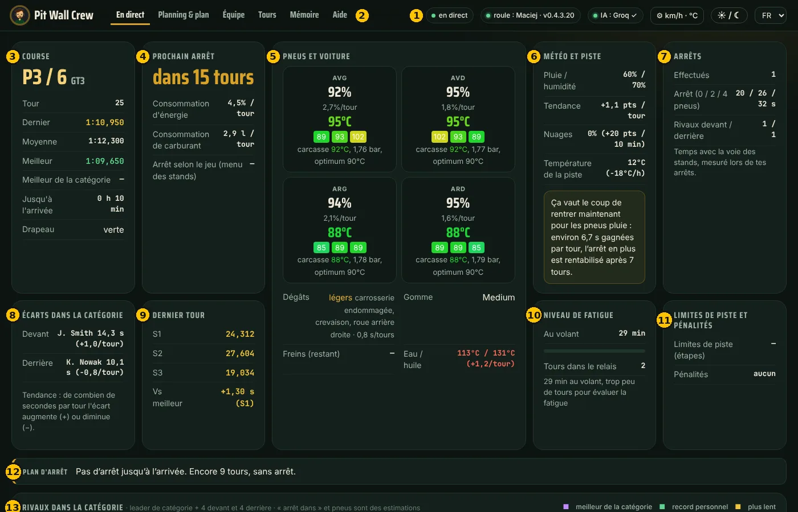
- État : les données sont-elles en direct, qui conduit, l'IA fonctionne-t-elle.
- Onglets : En direct, Planning & plan, Équipe, Tours (en haut un résumé de la session : meilleur tour et tour moyen, régularité, carburant et énergie par tour – pour chaque pilote et relais), Mémoire, Aide.
- Course : position dans la catégorie, tour, chronos, temps jusqu'à l'arrivée, drapeau.
- Prochain arrêt : dans combien de tours, consommation d'énergie et de carburant, ce qu'on fait à l'arrêt.
- Pneus et voiture : usure et températures de chaque pneu, dégâts, moteur, freins.
- Météo et piste : pluie, humidité, nuages, température de piste et remarques de l'ingénieur.
- Arrêts : le nombre d’arrêts effectués, la durée d’arrêt (0 / 2 / 4 pneus) mesurée sur vos propres arrêts et le nombre d’arrêts des concurrents devant et derrière.
- Écarts dans la catégorie : l’écart avec la voiture devant et derrière, et la tendance (de combien de secondes par tour il augmente ou diminue).
- Dernier tour : les temps des secteurs S1–S3 et l’écart avec le meilleur tour.
- Niveau de fatigue : depuis combien de temps le pilote roule et combien de tours dans le relais ; la fatigue est évaluée d’après les temps au tour.
- Limites de piste et pénalités : dépassements des limites de piste et pénalités.
- Plan d’arrêt : que faire au prochain arrêt, ou si vous rejoignez l’arrivée sans arrêt.
- Rivaux de la catégorie : écarts, rythme, qui rattrape qui, énergie, arrêt prévu.
- Comparaison avec un coéquipier : après chaque tour propre – dans quels virages et de combien un coéquipier est plus rapide (son meilleur tour dans des conditions similaires). Dans Assetto Corsa aussi un coéquipier dans une autre voiture de la même catégorie – alors seulement où et de combien, sans conseils.
- Planning des relais : qui conduit, quand a lieu le changement, ce qui se passe à l'arrêt, de combien de minutes le planning a bougé par rapport au plan. Sans plan pour aujourd'hui, il est créé automatiquement pour le pilote en piste – d'après la durée de la course et les pneus disponibles dans le jeu.
- Apparence : thème sombre par défaut, bouton ☀/☾ en haut. Temps en couleur : violet – meilleur de la catégorie, vert – ton record, jaune – plus lent. La barre « Dégâts » sous la carte n’apparaît qu’en cas de dégâts (schéma de la voiture, perte au tour, vitesse max., durée maximale d’une réparation et conseil). En course limitée en tours, « Jusqu’à l’arrivée » affiche les tours (ex. 12 / 40).
- Fondateur de l’équipe : a son propre mot de passe (défini à la création de l’équipe ou dans l’onglet Équipe : « Devenir fondateur »). Lui seul peut retirer ou renommer des pilotes et changer le mot de passe de l’équipe ; il se connecte au Pit Wall en cochant « Je suis le fondateur ».
- Plusieurs voitures de l’équipe dans une course : chaque voiture a sa propre vue (liste en haut, avec le numéro) ; les messages et questions vont au pilote de la voiture choisie. Chaque pilote entend son propre ingénieur et son spotter.
- Planning en direct : barre des relais (couleur = pilote, « MAINTENANT » en rouge). Tours : filtres (session – chaque course séparément ; voiture – quand plusieurs voitures de l’équipe roulent, pilote, relais, tours propres), graphique de rythme, temps en couleur et secteurs S1–S3. Carte comparative : circuit et voiture, jusqu'à 3 tours de la liste (🟢 meilleur tour valide du pilote – sur le circuit et dans chaque session ; sessions repliées ; filtres ; bouton « 🟢 Meilleurs tours »). Dans la base de l'équipe : tours des 14 derniers jours, meilleurs selon les conditions (jusqu'à être battus ou 90 jours) et 📌 (sans limite) ; plus anciens 💾 – depuis le disque du pilote quand son Pit Wall Crew est lancé. Carte : couleur = qui est le plus rapide, points de freinage, limites et temps des secteurs, valeurs au survol, zoom ; conditions (dont la gomme sur la piste), « où gagner le plus », tour idéal, graphique vitesse / accélérateur / frein / rapport et temps perdu ; clic sur un virage – la carte à côté des détails, et « + T3 » / « − T3 » regroupe des virages en section pour comparer toute la section ; différences de setup ; « 🔗 Copier le lien ». ⚙ Unités dans l'en-tête (km/h–mph, m–ft, bar–psi–kPa, °C–°F, l–gal). Mémoire : notes en cartes avec recherche et filtre par circuit. Aide : sommaire.
Plus bas se trouvent la carte du circuit avec toutes les voitures et la radio d'équipe : « Au pilote » (l'ingénieur lit le message), « Demander à l'ingénieur » (réponse à la voix), « Demander (texte seul) », « En mémoire ».
Sur téléphone
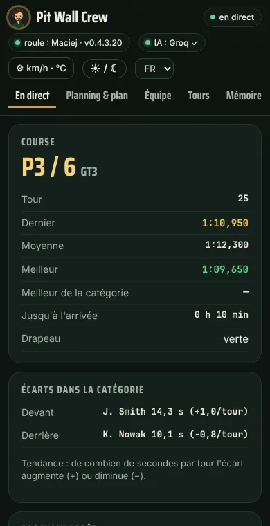
Onglet Équipe
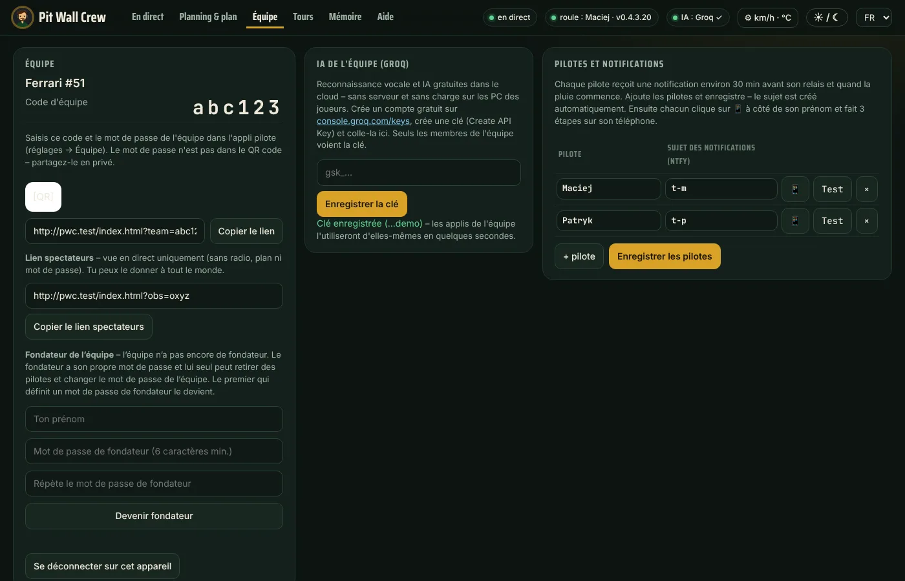
Code d'équipe et QR code pour le mur, pilotes avec leurs sujets de notification, la clé Groq et un lien spectateurs –
vue en direct seulement, sans radio ni plan ; tu peux le donner à n'importe qui. Quand plusieurs voitures de l'équipe roulent (ex. Assetto Corsa), le spectateur choisit dans la liste en haut la voiture qu'il regarde (pilote – voiture). Le choix reste dans l'adresse (&auto=…), on peut donc partager un lien vers une voiture précise.
Planning & plan (avant une course longue, une personne)
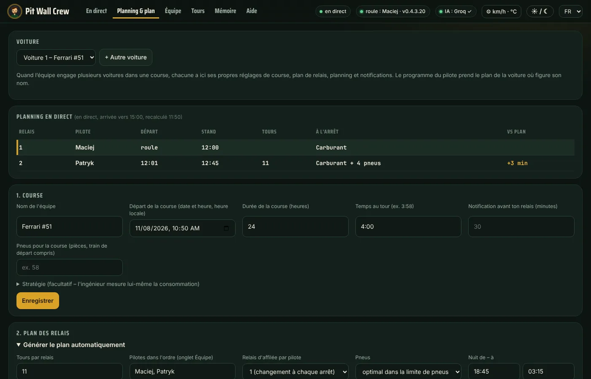
- Voiture (en haut) : quand l’équipe engage plusieurs voitures dans une course, + Autre voiture – chacune a ses propres réglages de course, plan de relais, planning et notifications. Le programme du pilote prend le plan de la voiture où figure son nom.
- 1. Course : date et heure du départ, durée, temps au tour, pneus pour la course → Enregistrer.
- Disponibilité des pilotes : clique sur une heure – disponible → si besoin → indisponible (heures dans ton fuseau horaire ; chacun peut marquer les siennes). Le plan automatique évite les pilotes indisponibles, et dans le tableau un pilote sur une heure indisponible a un cadre rouge.
- 2. Plan des relais → Générer le plan automatiquement : tours par relais, ordre des pilotes, usure des pneus (dans Mesures, choisis le circuit et la voiture et le pilote – Charger remplit l'usure et les temps d'arrêt complet mesurés pendant vos sessions), temps d'arrêt, Pneus usés au départ (%) – si vous partez sur le train des qualifications → Générer le plan. Le programme répartit les pneus pour qu'ils s'usent le plus régulièrement possible.
- Ajuste le tableau si besoin : pilote dans la liste, tours, Gauche / Droite = changer les pneus de ce côté → Enregistrer le plan. Le compteur indique si vous restez dans l'allocation de pneus.
Pendant la course, le planning se recalcule d'après le rythme réel. L'ingénieur te fait rentrer et change les pneus selon le plan (sauf si un pneu ne tient pas ou si l'énergie manque). Le plan s'applique à une course de la durée saisie dans « 1. Course ».
Notifications sur téléphone (chaque pilote, 2 minutes)
- Installe l'appli gratuite ntfy (Google Play / App Store).
- Sur le Pit Wall : Équipe → clique sur 📱 à côté de ton prénom – ton sujet et un QR code apparaissent.
- Dans ntfy, touche +, saisis le sujet et Subscribe (ou scanne le QR code).
- Clique sur Test à côté de ton prénom – « Pit Wall Crew – test » arrive sur ton téléphone.
La notification arrive environ 30 minutes avant ton relais, une deuxième si le relais bouge de 10 minutes ou plus, et quand il commence à pleuvoir. Le pilote peut aussi écrire à toute l'équipe à la voix : « envoie un message à l'équipe : je rentre ce tour » (ou à une personne : « notification Adam : … »).
Course longue (par ex. 24 h)
- Le pilote en piste garde Pit Wall Crew lancé pendant tout le relais – son appli envoie les données au mur et les notifications.
- Les autres peuvent éteindre le jeu, l'appli et le PC. Après la notification, lance le PC, LMU et Pit Wall Crew avant de monter dans la voiture.
- Le plan, le planning, les messages, la mémoire d'équipe et le briefing de relais sont dans la base de l'équipe – le programme les récupère tout seul.
Répétition avant la course (15 minutes)
- Tout le monde lance Pit Wall Crew – Équipe et IA : Groq en vert.
- Un pilote clique sur Test sans jeu. Les autres ouvrent le Pit Wall – les données doivent être « en direct ».
- Le pilote demande à la voix « combien de carburant ? » – tout le monde entend la réponse.
- Envoie « Au pilote » depuis le mur – l'ingénieur lit le message.
Fair share (LMU)
Dans les événements en équipe, chaque pilote qui a fait au moins un tour doit avoir au moins 50 % / nombre de pilotes des tours de l'équipe (2 pilotes – 25 %, 3 – 16,7 %, 4 – 12,5 %, 5 – 10 %, 6 – 8,3 %), sinon tout l'équipage ne gagne pas de DR/SR. L'ingénieur compte les tours de chaque pilote, rappelle aux arrêts combien il en manque à chacun, prévient quand ça devient serré et répond à « fair share ? ». Sur le Pit Wall – onglet En direct.
Résumé de course
À l'arrivée, l'ingénieur annonce brièvement le résultat, et le compare à la position de départ : des félicitations pour les places gagnées, des encouragements après en avoir perdu (les chocs et pénalités sont pris en compte). Le résumé complet (résultat, arrêts, fair share, ton rythme et ta régularité, sorties, consommation) est dans la fenêtre du programme, sur le Pit Wall et dans recordings\podsumowanie_….txt.
Si quelque chose ne marche pas
| Symptôme | Que faire |
|---|---|
| « En attente de LMU » alors que le jeu tourne | LMU : Settings → Gameplay → Enable Plugins = ON, puis relance le jeu. |
| L'ingénieur ne m'entend pas | Micro et bouton → Test 3 s. Vérifie la sourdine du casque et Windows → Confidentialité → Microphone. |
| « Mauvais code ou mot de passe d'équipe » | Équipe → corrige → Se connecter à l'équipe → Enregistrer. |
| J'ai oublié le code ou le mot de passe de l'équipe | Code : l'onglet Équipe du Pit Wall chez quelqu'un de connecté (ou la liste des équipes dans le programme et sur la page). Mot de passe : le fondateur le connaît, ainsi que tous ceux qui l'ont saisi dans le programme. Un nouveau mot de passe d'équipe est défini par le fondateur : Pit Wall en cochant « Je suis le fondateur » → Équipe → Changer le mot de passe de l’équipe ; s'il ne s'en souvient pas non plus – « Demander un nouveau mot de passe à l’auteur » et Aide → Signaler un problème avec le code de l'équipe. |
| Pit Wall : « pas de données du jeu » | L'appli du pilote doit tourner avec « Équipe » en vert. |
| « IA : Groq – mauvaise clé » | Colle à nouveau la clé (Pit Wall → Équipe → IA de l'équipe). |
| Chaque message s'entend deux fois | Le programme tourne deux fois : ferme l'appli, termine « pythonw » dans le Gestionnaire des tâches, relance une fois. |
| Pas de notifications | Départ et pilotes dans le plan, sujet dans ntfy, bouton Test ; l'appli tourne sur le PC de quelqu'un. |
| Le jeu saccade | Souvent pas assez de mémoire graphique : baisse les textures, les voitures visibles et les ombres, ferme les autres programmes. |
| « Windows a protégé votre ordinateur » à l'installation | L'installateur n'a pas encore de signature numérique. Clique sur Informations complémentaires → Exécuter quand même. |
| Windows 11 bloque l'installateur sans « Exécuter quand même » | Le « Contrôle intelligent des applications » est activé et refuse les programmes sans signature numérique. On peut le désactiver (Sécurité Windows → Contrôle des applications et du navigateur), mais Windows ne permet pas de le réactiver ensuite. |
| AVG ou Avast analyse l'installateur (« CyberCapture ») | L'antivirus vérifie dans le cloud un nouveau fichier sans signature numérique. Attends le résultat ou clique sur Ouvrir quand même. |
| « Je n'ai pas compris », la voix de l'ingénieur coupe, les messages disent « Ton antivirus (Avast/AVG) bloque… » | Avast/AVG bloque les connexions de l'appli. Avast/AVG → Menu → Paramètres → Général → Exceptions → Ajouter une exception → le dossier Documents\Pit Wall Crew, puis redémarre l'appli. |
Signaler un problème ou une suggestion
Dans l'appli : Aide → Signaler un problème, sur le Pit Wall : l'onglet Aide. Ça va directement à l'auteur. En roulant, dis « signale un bug : … » (p. ex. « signale un bug : le spotter a dit à gauche mais il n'y avait personne ») – l'appli ajoute ta position sur la piste, le tour et les derniers messages de l'ingénieur ; juste « signale un bug » – l'ingénieur demande ce qui s'est passé. Avec ton accord, l'appli peut envoyer automatiquement un rapport en cas de plantage (sans voix, clés ni mots de passe) – tu l'actives ou le désactives sur la même page. Là aussi, tu peux couper le compteur anonyme d'utilisateurs (numéro d'installation aléatoire, version et langue – ni noms ni données du jeu) et les statistiques d'utilisation des fonctions (noms des fonctions, nombres et temps de démarrage – jamais tes questions) et les phrases que l'IA a reconnues comme commandes (sans noms – les plus fréquentes sont ajoutées à l'appli pour tous). Les mises à jour ne téléchargent que les fichiers modifiés si tu as la version précédente. Séparément, tu peux désactiver l'envoi des questions que l'ingénieur n'a pas comprises (seulement le texte, sans noms – l'auteur ajoute les commandes manquantes). Détails : Confidentialité.
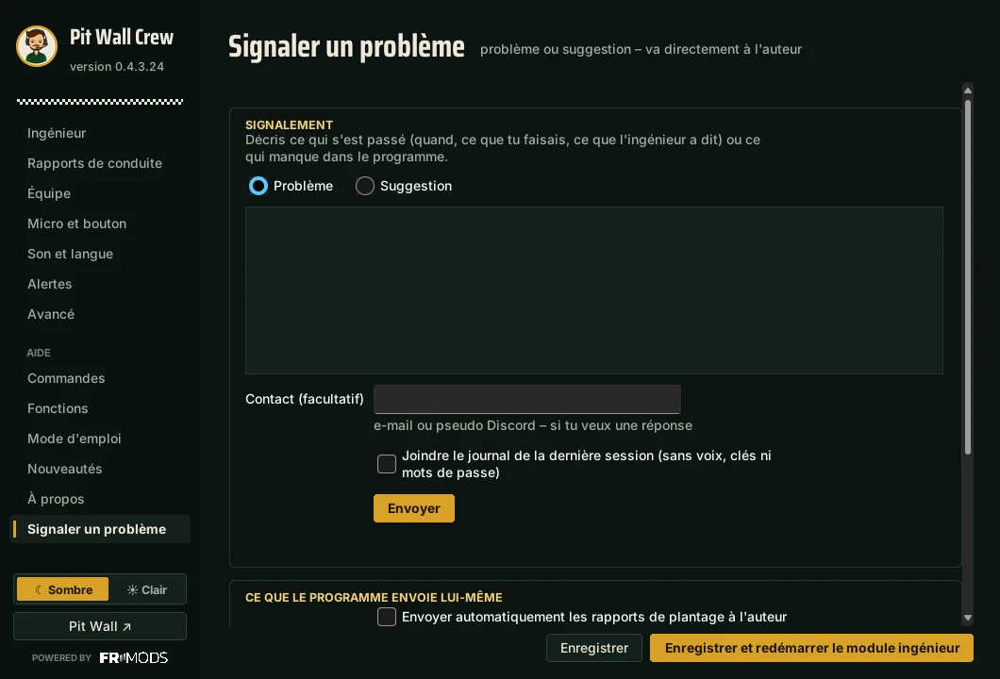